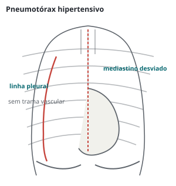
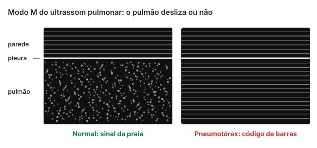

Trauma · 80 min · ATLS 11ª ed. 2025 · monografia
Atendimento inicial ao politraumatizado
Atendimento inicial ao traumatizado grave pelo ATLS 11ª edição (ACS, 2025), com a diretriz europeia de sangramento no trauma (2023), a triagem de campo de 2021 e os ensaios CRASH-2, CRASH-3 e PROPPR: triagem, xABCDE, lesões torácicas imediatas, choque hemorrágico e reanimação de controle de danos, anticoagulantes, TCE, coluna cervical e populações especiais.
ATLS 11ª edição e as fontes deste texto
A 11ª edição do Advanced Trauma Life Support foi lançada pelo American College of Surgeons em setembro de 2025, sete anos depois da 10ª. O manual foi reorganizado, ganhou capítulos sobre sistemas de trauma, prevenção, cuidado informado pelo trauma e trauma penetrante, e trouxe a mudança que a prova cobra primeiro: o ABCDE passou a ser xABCDE, em que o "x" é o controle da hemorragia exsanguinante, feito antes da via aérea quando há sangramento externo maciço.
A revisão de Ramasamy (Injury, 2026) resume as demais mudanças: reanimação de controle de danos, hipotensão permissiva, restrição de cristaloide, transfusão precoce, foco neuroprotetor e restrição do movimento da coluna no lugar de "imobilização". Os números do manual não estão em fonte aberta que eu tenha conferido; onde este texto dá número, ele vem da fonte primária citada ao lado.
| Tema | 10ª edição (2018) | 11ª edição (2025) |
|---|---|---|
| Sequência da primária | ABCDE, com controle de hemorragia externa dentro do C | xABCDE: hemorragia exsanguinante primeiro |
| Volume inicial | Bólus de cristaloide de 1 L no adulto e 20 mL/kg na criança abaixo de 40 kg, com cautela | Restrição de cristaloide e hemoderivado precoce; hipotensão permissiva explícita |
| Coluna | Proteção da coluna, colar e prancha | Restrição do movimento da coluna, com mudanças operacionais |
Preparo, triagem de campo e regulação
Na fase pré-hospitalar, a prioridade é via aérea, controle do sangramento externo, prevenção da hipotermia, restrição da coluna quando indicada e transporte ao hospital adequado mais próximo, que não é necessariamente o mais próximo. A diretriz europeia recomenda transporte direto ao centro de trauma e o menor tempo possível entre lesão e controle do sangramento (ambas 1B). No hospital, o preparo inclui sala aquecida, via aérea testada, hemoderivados e protocolo de transfusão maciça acionáveis e equipe com líder definido.
A referência de triagem é a diretriz nacional norte-americana de triagem de campo de 2021 (ACS-COT, publicada em 2022), que trocou os quatro "passos" de 2011 por duas categorias de risco: vermelha (alto risco, centro de trauma de mais alto nível disponível) e amarela (risco moderado, centro de trauma, não necessariamente o de mais alto nível).
| Categoria | Critérios da triagem de campo de 2021 |
|---|---|
| Vermelho: padrão de lesão | Lesão penetrante de cabeça, pescoço, tronco e porção proximal dos membros; deformidade ou suspeita de fratura de crânio; suspeita de lesão de coluna com perda motora ou sensitiva nova; instabilidade, deformidade ou suspeita de tórax instável; suspeita de fratura de pelve; suspeita de fratura de dois ou mais ossos longos proximais; membro esmagado, desenluvado, mutilado ou sem pulso; amputação proximal ao punho ou ao tornozelo; sangramento ativo que exige torniquete ou tamponamento da ferida com pressão contínua (critério novo) |
| Vermelho: estado mental e sinais vitais | Não obedece a comandos (Glasgow motor < 6), que substituiu o Glasgow total ≤ 13; frequência respiratória < 10 ou > 29/min; desconforto respiratório ou necessidade de suporte ventilatório; SpO₂ em ar ambiente < 90%; PAS < 70 + (2 × idade em anos) de 0 a 9 anos; PAS < 90 mmHg ou FC > PAS de 10 a 64 anos; PAS < 110 mmHg ou FC > PAS a partir de 65 anos |
| Amarelo: mecanismo | Ejeção parcial ou completa do automóvel; morte no mesmo compartimento; intrusão (inclusive teto) > 12 polegadas no assento do ocupante ou > 18 em qualquer ponto, ou necessidade de desencarceramento; criança de 0 a 9 anos sem contenção ou em cadeirinha solta; telemetria do veículo sugestiva de lesão grave; condutor separado do veículo com impacto significativo (moto, quadriciclo, cavalo); pedestre ou ciclista arremessado, atropelado ou com impacto significativo; queda de altura > 10 pés (cerca de 3 m), em qualquer idade |
| Amarelo: julgamento da equipe | Queda de baixa altura com impacto craniano em criança ≤ 5 anos ou idoso ≥ 65; anticoagulante; suspeita de maus-tratos; necessidades especiais de alta complexidade; gestação > 20 semanas; queimadura com trauma |
A forma "frequência maior que a sistólica" equivale a índice de choque acima de 1,0. O idoso tem corte de sistólica mais alto porque a sistólica abaixo de 90 identifica uma fração mínima dos idosos gravemente feridos. O paciente em extremo (via aérea instável, choque grave, parada traumática) pode ir antes ao hospital mais próximo para estabilização; a criança com critério vermelho vai, de preferência, a centro pediátrico; o queimado com trauma, a centro de trauma com unidade de queimados, e na falta dela o trauma tem precedência. Critérios anatômicos e fisiológicos identificam menos da metade dos gravemente feridos: por isso existem os de mecanismo e de julgamento, e o sistema aceita supertriagem para reduzir a subtriagem.
Avaliação primária xABCDE
A lógica do ATLS não mudou: tratar primeiro o que mata primeiro, sem esperar diagnóstico definitivo. A primária é feita e tratada ao mesmo tempo, e em equipe é horizontal: um examina a via aérea, outro comprime a ferida, outro punciona acessos. O que mudou é a primeira letra: sangramento externo maciço (amputação, ferida de virilha jorrando) mata em minutos, antes da hipóxia de uma via aérea parcialmente obstruída. Perguntar o nome e o que aconteceu já orienta: resposta apropriada indica via aérea pérvia, ventilação para falar e perfusão cerebral razoável. Piorou em qualquer momento, volta ao x.
flowchart TD A["Chegada: equipe com líder
precauções-padrão"] --> X["x: compressão direta, torniquete
tamponamento juncional"] X --> B["A: via aérea pérvia e protegida
coluna cervical alinhada"] B --> C["B: descomprimir o hipertensivo
curativo no aberto · drenar"] C --> D["C: acessos calibrosos, sangue precoce
ácido tranexâmico · cinta pélvica"] D --> E["D: Glasgow, pupilas
lateralização · glicemia"] E --> F["E: despir, rolar em bloco
aquecer"] F --> G["Adjuntos: monitor, eFAST
radiografias, gasometria"] G --> H{"Piorou?"} H -->|"sim"| X H -->|"não"| I{"Precisa de recurso
que não há aqui?"} I -->|"sim"| J["Transferir sem
esperar a secundária"] I -->|"não"| K["Secundária: AMPLE
e cabeça aos pés"]
Hemorragia exsanguinante
O controle começa pela compressão direta, firme e mantida. Ferida profunda que não responde pede tamponamento com gaze (de preferência hemostática) empurrada até o fundo, seguida de compressão. No membro, o torniquete vai proximal à lesão e é apertado até cessar o sangramento e o pulso distal; torniquete frouxo obstrui só o retorno venoso e aumenta o sangramento. Anota-se o horário. Sangramento juncional (virilha, axila, raiz do pescoço) não aceita torniquete comum e é tamponado.
| Recomendação (diretriz europeia 2023) | Grau |
|---|---|
| Transportar o traumatizado grave diretamente para um centro de trauma apropriado | forte1B |
| Minimizar o tempo entre a lesão e o controle do sangramento | forte1B |
| Compressão local de feridas abertas para limitar sangramento com risco de vida | forte1B |
| Torniquete como adjunto para sangramento com risco de vida de lesão aberta de membro, na fase pré-cirúrgica | forte1B |
| Cinta pélvica no pré-hospitalar diante de suspeita de fratura de pelve com sangramento com risco de vida | forte1C |
| Fechamento e estabilização do anel pélvico o mais cedo possível no paciente com disrupção do anel e choque hemorrágico | forte1B |
A cinta pélvica vai sobre os trocânteres maiores, não sobre as cristas ilíacas. Na fratura instável, a manobra de compressão da pelve é feita uma vez, ou nenhuma se a radiografia já mostra a lesão. A diretriz europeia ainda recomenda tamponamento pré-peritoneal quando o sangramento continua ou a angioembolização não está disponível a tempo (1C) e sugere considerar o REBOA como ponte na hemorragia não compressível com colapso (2C).
Via aérea com restrição do movimento cervical
A via aérea é avaliada olhando (agitação sugere hipóxia, torpor sugere hipercapnia), ouvindo (ronco, gargarejo, estridor e rouquidão indicam obstrução parcial) e palpando (traqueia desviada, enfisema subcutâneo). As ameaças são previsíveis: rebaixamento de consciência, trauma maxilofacial, hematoma cervical em expansão, trauma laríngeo (rouquidão, enfisema subcutâneo e fratura palpável) e lesão inalatória. A coluna cervical fica alinhada por estabilização manual; para intubar, abre-se a parte anterior do colar. Manobras iniciais: elevação do mento e anteriorização da mandíbula, aspiração, cânula orofaríngea no inconsciente ou nasofaríngea no semiconsciente, esta evitada na suspeita de fratura de base de crânio.
| Recomendação (diretriz europeia 2023) | Grau |
|---|---|
| Intubação traqueal ou via aérea alternativa sem demora diante de obstrução, consciência alterada (Glasgow ≤ 8), hipoventilação ou hipoxemia | forte1B |
| Evitar hipoxemia | forte1A |
| Evitar hiperoxemia, exceto diante de exsanguinação iminente | fraca2B |
| Normoventilação do traumatizado | forte1B |
| Hiperventilação como medida salvadora diante de sinais de herniação cerebral | fraca2C |
Via aérea definitiva é tubo na traqueia com balonete insuflado, fixado e ligado a oxigênio. A preferida é a orotraqueal por sequência rápida, lembrando que a pressão positiva reduz o retorno venoso e pode precipitar colapso no hipovolêmico: sangue e indução cuidadosa andam juntos. Confirma-se por capnografia. A meta de normoventilação da diretriz é PaCO₂ de 35 a 40 mmHg. Quando não se intuba nem se oxigena, a saída é a cricotireoidostomia cirúrgica:
- Palpar a cartilagem tireoide (proeminência laríngea), descer o dedo até a depressão entre ela e a cartilagem cricoide: é a membrana cricotireóidea, superficial e pouco vascularizada na linha média.
- Estabilizar a laringe com a mão não dominante entre o polegar e o dedo médio; o indicador fica sobre a membrana.
- Incisão vertical na pele, na linha média (útil quando a anatomia não é palpável), ou transversa direta sobre a membrana.
- Incisão transversa da membrana; dilatação com o cabo do bisturi, pinça ou gancho traqueal.
- Introduzir tubo com balonete de pequeno calibre, insuflar, ventilar e confirmar por capnografia.
A cricoide é o único anel cartilaginoso completo e sustenta a traqueia; na criança pequena é o ponto mais estreito e frágil, e a cricotireoidostomia cirúrgica é evitada em favor da punção com ventilação a jato como ponte. Traqueostomia não é via de emergência.
Ventilação e lesões torácicas com risco imediato
Via aérea pérvia não garante ventilação. Cinco lesões são tratadas na primária, sem esperar imagem: pneumotórax hipertensivo, pneumotórax aberto, hemotórax maciço, tamponamento e tórax instável.
Pneumotórax hipertensivo. Válvula unidirecional: o ar entra e não sai, o mediastino desvia e o retorno venoso cai. O diagnóstico é clínico: desconforto, taquicardia, hipotensão, traqueia desviada para o lado oposto, murmúrio ausente, hipertimpanismo e turgência jugular (que falta no hipovolêmico); é mais comum sob ventilação com pressão positiva. Trata-se com descompressão por agulha ou toracostomia digital, seguida de dreno.

O local da punção é divergência que a prova explora. A 10ª edição do ATLS levou a punção do adulto ao 4º ou 5º espaço intercostal, anterior à linha axilar média, com agulha de 5 a 8 cm, porque no 2º espaço a parede é espessa demais para agulhas curtas; o European Trauma Course mantém o 2º espaço na linha hemiclavicular com cateter extralongo. A metanálise de 2025 (World J Emerg Surg) mostrou menos falha com agulhas mais longas e sugeriu 7 cm, em qualquer dos sítios à direita e no 2º espaço hemiclavicular à esquerda, pelo risco cardíaco.

Drenagem torácica. O dreno entra no triângulo de segurança (borda lateral do peitoral maior, borda anterior do grande dorsal, linha do mamilo no 5º espaço, ápice abaixo da axila), passando pela borda superior da costela inferior, porque o feixe intercostal corre no sulco da borda inferior. O dedo explora a cavidade antes do tubo. No pneumotórax, a ponta vai ao ápice e todos os orifícios ficam dentro da pleura.
Pneumotórax aberto. Defeito de cerca de dois terços do diâmetro da traqueia faz o ar passar preferencialmente pela ferida. Conduta: curativo oclusivo fixado em três lados, que funciona como válvula, dreno longe da ferida e, em geral, fechamento cirúrgico. Fechar os quatro lados sem dreno cria pneumotórax hipertensivo.
Hemotórax maciço. Classicamente mais de 1.500 mL na drenagem inicial; causa choque e hipoxemia. Reposição com sangue e dreno de grosso calibre andam juntos. A toracotomia é indicada pela drenagem inicial volumosa, pelo débito persistente da ordem de 200 mL/h, pela transfusão continuada e, acima de tudo, pela instabilidade. Ferida penetrante medial ao mamilo ou à escápula sugere lesão de grandes vasos, hilo ou coração.
Tamponamento cardíaco. Mais comum no penetrante. A tríade de Beck (hipotensão, bulhas abafadas, turgência jugular) é incompleta na maioria; o diagnóstico vem da janela pericárdica do eFAST, e o pneumotórax hipertensivo esquerdo precisa ser excluído. A pericardiocentese é temporária e falha com coágulo; o tratamento é cirúrgico (janela subxifoide, toracotomia ou esternotomia), sem demora.
Tórax instável. Fraturas de duas ou mais costelas adjacentes em dois ou mais pontos, com movimento paradoxal. A hipoxemia vem da contusão pulmonar, não da instabilidade: analgesia eficaz (inclusive bloqueios), oxigênio, ventilação quando necessária e cuidado com sobrecarga de volume. Fixação das costelas é indicação seletiva, fora da primária.
flowchart TD A["Trauma com hipotensão
ou índice de choque alto"] --> B{"Jugular túrgida ou
ausculta assimétrica?"} B -->|"não"| G["Hemorragia: procurar
externo · tórax · abdome
pelve · ossos longos"] B -->|"sim"| D{"Murmúrio ausente e
traqueia desviada?"} D -->|"sim"| E["Pneumotórax
hipertensivo:
descomprimir"] D -->|"não"| F["eFAST pericárdico:
tamponamento
vai à cirurgia"] G --> H["Radiografia de tórax
e pelve · eFAST
exame dos membros"] H --> I{"Fonte achada?"} I -->|"sim"| J["Controle imediato
da fonte"] I -->|"não"| K["Choque neurogênico
ou contusão cardíaca?"]
Reconhecimento do choque hemorrágico
No traumatizado, todo choque é hemorrágico até prova em contrário, e o sangue está em cinco lugares: externo, tórax, abdome, retroperitônio e pelve, ossos longos. As causas não hemorrágicas têm tratamento próprio: pneumotórax hipertensivo e tamponamento, contusão cardíaca e choque neurogênico (hipotensão sem taquicardia, pele quente). O TCE isolado não causa choque, salvo na fase terminal.
A tabela de classes é a da 10ª edição, com o déficit de bases, reproduzida com permissão do ACS na diretriz europeia de 2023; não confirmei em fonte aberta se a 11ª a modificou.
| Parâmetro | Classe I | Classe II (leve) | Classe III (moderada) | Classe IV (grave) |
|---|---|---|---|---|
| Perda estimada | < 15% | 15 a 30% | 31 a 40% | > 40% |
| Frequência cardíaca | normal | normal ou ↑ | ↑ | ↑ ou ↑↑ |
| Pressão arterial | normal | normal | normal ou ↓ | ↓ |
| Pressão de pulso | normal | ↓ | ↓ | ↓ |
| Frequência respiratória | normal | normal | normal ou ↑ | ↑ |
| Diurese | normal | normal | ↓ | ↓↓ |
| Glasgow | normal | normal | ↓ | ↓ |
| Déficit de bases | 0 a −2 mEq/L | −2 a −6 mEq/L | −6 a −10 mEq/L | −10 mEq/L ou menos |
| Hemoderivado | monitorizar | possível | sim | protocolo de transfusão maciça |
A pressão de pulso cai já na classe II, porque a vasoconstrição eleva a diastólica, e a sistólica só cai na classe III, com cerca de um terço da volemia perdida. Atleta, idoso em betabloqueador, portador de marca-passo e gestante distorcem os sinais vitais. A diretriz europeia trata a tabela como estimativa grosseira.
O índice de choque (FC dividida pela PAS) fica entre 0,5 e 0,7 no adulto saudável; nos estudos citados pela diretriz, valores de 0,8 a 1,0 se associaram a transfusão maciça e intervenção, e pressão de pulso abaixo de 30 mmHg também. O escore ABC (Nunez, 2009) dá um ponto para mecanismo penetrante, FAST positivo, PAS ≤ 90 e FC ≥ 120 na chegada; dois ou mais tiveram sensibilidade de 75% e especificidade de 86% para transfusão maciça.
| Recomendação (diretriz europeia 2023) | Grau |
|---|---|
| Avaliar a extensão da hemorragia combinando fisiologia, padrão anatômico de lesão, mecanismo e resposta à reanimação inicial | forte1C |
| Usar índice de choque e/ou pressão de pulso para estimar o grau do choque e a necessidade de transfusão | forte1C |
| Controle imediato do sangramento no paciente com fonte evidente, ou em choque extremo com fonte suspeita | forte1B |
| Investigação imediata quando a fonte não é identificada e não há necessidade de controle imediato | forte1C |
| Hemoglobina e/ou hematócrito seriados, porque o valor inicial normal pode mascarar sangramento precoce | forte1B |
| Lactato para estimar e monitorizar sangramento e hipoperfusão; na falta dele, déficit de bases | forte1B |
| Monitorização precoce e repetida da hemostasia por TP/INR, fibrinogênio de Clauss e plaquetas e/ou método viscoelástico | forte1C |
A resposta à reanimação inicial da 10ª edição continua útil: rápida e sustentada (sangramento parado), transitória (sangramento continua, precisa de sangue e controle da fonte) e mínima ou ausente (sangramento maciço ou choque não hemorrágico, controle imediato). Com a reanimação restritiva, a resposta é lida aos hemoderivados, não a litros de soro.
Leitura
Pressão de pulso de 16 mmHg e índice de choque de 1,23: hemorragia em curso, pelo menos classe II e provavelmente III. Sistólica normal não descarta choque. Conduta: dois acessos, sangue e ácido tranexâmico, eFAST, controle da fonte. Se o eFAST for positivo com instabilidade, a próxima parada é a sala de cirurgia, não a tomografia.Reanimação de controle de danos
Reanimação de controle de danos trata o choque hemorrágico sem piorar o sangramento até o controle da fonte: hipotensão permissiva, restrição de cristaloide, hemoderivados precoces com razão alta de plasma e plaquetas, ácido tranexâmico, cálcio e prevenção da hipotermia. A base é a coagulopatia induzida pelo trauma, presente já na chegada em parte dos gravemente feridos e agravada por diluição, acidose, hipotermia e hipocalcemia. Cristaloide em grande volume dilui, esfria e edemacia; a pressão normal antes do controle desloca o coágulo recém-formado.
A 10ª edição do ATLS limitava o bólus inicial a 1 L de cristaloide no adulto (20 mL/kg na criança abaixo de 40 kg); a 11ª tornou explícitas a hipotensão permissiva, a restrição de cristaloide e a transfusão precoce. Os alvos abaixo são da diretriz europeia.
| Recomendação (diretriz europeia 2023) | Grau |
|---|---|
| Na fase inicial, estratégia restritiva de volume com PAS de 80 a 90 mmHg (PAM de 50 a 60) até parar o sangramento maior, sem evidência clínica de lesão cerebral | forte1B |
| No TCE grave (Glasgow ≤ 8), manter PAM ≥ 80 mmHg | forte1C |
| Se a estratégia restritiva não atinge a meta, noradrenalina associada a fluidos | forte1C |
| Iniciar fluido com soro fisiológico a 0,9% ou cristaloide balanceado no hipotenso que sangra | forte1B |
Ácido tranexâmico. O CRASH-2 (Lancet 2010) randomizou 20.211 adultos com sangramento significativo, ou risco dele, até 8 horas do trauma. A mortalidade caiu de 16,0% para 14,5% (risco relativo 0,91) e a morte por sangramento de 5,7% para 4,9%, sem mais eventos oclusivos. A análise de 2011 mostrou a dependência do tempo: risco relativo de morte por sangramento de 0,68 até 1 hora, 0,79 entre 1 e 3 horas e 1,44 depois de 3 horas. Daí a janela de 3 horas, explícita no ATLS 11 e recomendada pela diretriz europeia (1A), com a primeira dose de preferência a caminho do hospital e sem esperar exame viscoelástico (1B).
- Indicação: traumatizado que sangra ou tem risco de sangramento significativo
- Ataque: 1 g IV em 10 minutos, o mais cedo possível, de preferência no pré-hospitalar
- Manutenção: 1 g IV em 8 horas
- Janela: até 3 horas do trauma; depois disso, não iniciar
Hemoderivados e razão. O PROPPR (JAMA 2015) comparou plasma, plaquetas e hemácias em razão 1:1:1 contra 1:1:2 em 680 pacientes com previsão de transfusão maciça. Não houve diferença de mortalidade em 24 horas (12,7% contra 17,0%) nem em 30 dias (22,4% contra 26,1%), mas o 1:1:1 obteve mais hemostasia (86% contra 78%) e menos morte por exsanguinação em 24 horas (9,2% contra 14,6%), sem mais complicações. É a base do protocolo 1:1:1 norte-americano. A diretriz europeia aceita duas estratégias iniciais: plasma e hemácias em razão de pelo menos 1:2, ou fibrinogênio (concentrado ou crioprecipitado) e hemácias (ambas 1C), com razão alta de plaquetas (2B), e depois reposição guiada por exames ou viscoelastometria (1B).
| Recomendação (diretriz europeia 2023) | Grau |
|---|---|
| Fibrinogênio (concentrado ou crioprecipitado) se o sangramento maior se acompanha de hipofibrinogenemia: sinal viscoelástico de déficit funcional ou Clauss ≤ 1,5 g/L | forte1C |
| Dose inicial de fibrinogênio de 3 a 4 g (15 a 20 unidades de crioprecipitado de doador único) | fraca2C |
| Plaquetas para manter contagem acima de 50.000/µL no sangramento ativo e acima de 100.000/µL no TCE | fraca2C |
| Monitorizar o cálcio ionizado e mantê-lo na faixa normal, especialmente na transfusão maciça | forte1C |
| Cloreto de cálcio para corrigir hipocalcemia | forte1C |
| Fator VII ativado recombinante como primeira linha | contra1B |
O citrato dos hemoderivados quela o cálcio ionizado, e a hipocalcemia piora contratilidade, tônus vascular e coagulação: transfusão maciça sem cálcio transforma choque compensado em parada. O cloreto oferece mais cálcio elementar que o gluconato.
flowchart TD A["Hemorragia grave suspeita
índice de choque alto
ou ABC ≥ 2"] --> B["Ativar protocolo de
transfusão maciça"] B --> C["Ácido tranexâmico 1 g
se até 3 h do trauma"] C --> D["Sangue precoce
plasma e plaquetas
em razão alta"] D --> E["Hipotensão permissiva
PAS 80 a 90 sem TCE
PAM ≥ 80 com TCE grave"] E --> F["Cálcio ionizado normal
aquecer · corrigir acidose"] F --> G{"Fonte controlada?"} G -->|"não"| H["Controle cirúrgico ou
angiográfico imediato
cirurgia de controle de danos"] H --> G G -->|"sim"| I["Reposição guiada por
INR, fibrinogênio, plaquetas
ou viscoelástico"] I --> J["Hb 7 a 9 g/dL
desligar protocolo"]
Reversão de anticoagulantes
O idoso anticoagulado com TCE é o paciente que conversa e morre. Identificar a droga e o horário da última dose faz parte da primária quando há sangramento ou TCE.
| Droga | Conduta no sangramento grave (diretriz europeia 2023) | Grau |
|---|---|---|
| Antagonista da vitamina K (varfarina) | Reversão de emergência com complexo protrombínico precoce associado a vitamina K1 5 a 10 mg IV. Menos que 5 mg pode não corrigir; mais que 10 mg dificulta reanticoagular por dias | forte1A |
| Dabigatrana | Idarucizumabe 5 g IV no sangramento com risco de vida; tempo de trombina diluído para dosar, ou tempo de trombina padrão para estimativa qualitativa | forte1C |
| Apixabana ou rivaroxabana | Andexanete alfa no sangramento com risco de vida, sobretudo no TCE; dosar atividade anti-Xa calibrada para a droga | fraca2C |
| Edoxabana, ou anti-Xa sem andexanete disponível | Complexo protrombínico 25 a 50 U/kg | fraca2C |
| Antiagregante plaquetário | Evitar transfusão rotineira de plaquetas no sangramento ativo; também não usar rotineiramente dispositivo de função plaquetária à beira do leito | forte1C |
Disfunção neurológica e TCE na sala de trauma
O D é rápido: Glasgow, pupilas, sinais de lateralização e glicemia capilar, porque hipoglicemia e intoxicação imitam TCE. Rebaixamento obriga a reavaliar oxigenação, ventilação e perfusão antes de atribuí-lo ao crânio: o cérebro hipóxico ou hipoperfundido é a lesão secundária que o atendimento inicial existe para evitar.
| Componente | Pontuação |
|---|---|
| Abertura ocular (O) | 4 espontânea · 3 ao som · 2 à pressão · 1 nenhuma |
| Resposta verbal (V) | 5 orientado · 4 confuso · 3 palavras · 2 sons · 1 nenhuma |
| Resposta motora (M) | 6 obedece a comandos · 5 localiza · 4 flexão normal · 3 flexão anormal · 2 extensão · 1 nenhuma |
| Reatividade pupilar (P) | Subtrai 2 se as duas pupilas não reagem, 1 se uma não reage, 0 se ambas reagem. Glasgow-P varia de 1 a 15 |
O TCE é leve (13 a 15), moderado (9 a 12) ou grave (3 a 8). O componente motor carrega mais prognóstico, e a triagem de 2021 passou a usar só "não obedece a comandos". O Glasgow-P (Brennan, 2018, dados do CRASH e do IMPACT) estende a escala abaixo de 3: a mortalidade foi de 51% com Glasgow 3 e de 74% com Glasgow-P 1. Intubado recebe "T" no verbal.
Metas. Evitar hipotensão e hipóxia é o tratamento do TCE nas primeiras horas. A diretriz europeia recomenda PAM ≥ 80 mmHg no TCE grave (1C), o que tira esse paciente da hipotensão permissiva; a Brain Trauma Foundation (4ª edição) propõe PAS ≥ 100 mmHg de 50 a 69 anos e ≥ 110 mmHg de 15 a 49 ou acima de 70 (nível III). Evitar hipoxemia (1A) e hiperoxia extrema; normoventilação com PaCO₂ de 35 a 40 mmHg, com hiperventilação apenas breve, diante de herniação (2C). Evitar Ringer lactato no TCE grave e manter plaquetas acima de 100.000/µL se houver sangramento.
Ácido tranexâmico no TCE. O CRASH-3 (Lancet 2019) randomizou 12.737 adultos com TCE (Glasgow ≤ 12 ou sangramento intracraniano) dentro de 3 horas. No conjunto, a morte relacionada ao TCE foi de 18,5% contra 19,8% (risco relativo 0,94, não significativo); o benefício apareceu no TCE leve a moderado (0,78) e não no grave (0,99), e foi maior quanto mais cedo.
O instável não vai ao tomógrafo. Com choque abdominal e TCE, a laparotomia vem primeiro, porque a hipotensão lesa o cérebro mais rápido que o hematoma; a neurocirurgia é acionada em paralelo.
Exposição e adjuntos da avaliação primária
O E é despir, examinar frente e dorso com rolamento em bloco e logo cobrir e aquecer (cobertores, fluidos e hemoderivados aquecidos), porque a hipotermia agrava coagulopatia e acidose.
Os adjuntos acompanham a primária sem atrasá-la: monitorização com capnografia e diurese, gasometria com lactato, tipagem, hemoglobina, coagulograma, teste de gravidez, radiografia de tórax e pelve e eFAST. A diretriz europeia recomenda FAST nas lesões toracoabdominais (1C) e tomografia de corpo inteiro precoce (1B) em quem pode ir ao tomógrafo. O FAST é específico (0,96) e pouco sensível (0,74): positivo no instável indica laparotomia, negativo não exclui lesão.

A sonda vesical não é passada às cegas com sangue no meato ou equimose perineal (uretrografia retrógrada antes). A sonda gástrica não vai pelo nariz na suspeita de fratura de base de crânio ou lâmina cribriforme (rinorreia, equimose periorbitária, sinal de Battle): usa-se a via oral.
Controle definitivo e transferência
Choque com fonte identificada vai ao controle imediato: laparotomia no eFAST positivo com instabilidade, toracotomia no hemotórax maciço instável, fixação, embolização ou tamponamento na pelve. A diretriz europeia recomenda cirurgia de controle de danos no choque hemorrágico com sangramento contínuo, coagulopatia ou lesão vascular abdominal com lesão pancreática (1B), e também diante de hipotermia, acidose, lesão inacessível ou procedimento demorado (1C); sem esses fatores, cirurgia definitiva (1C).
A transferência é decidida assim que as necessidades excedem os recursos, muitas vezes ainda na primária. Não se atrasa por exames que não mudam a conduta local; estabiliza-se o possível antes da saída (via aérea definitiva se houver risco de perdê-la, dreno, controle externo, sangue); e a comunicação é de médico para médico, com registros, imagens e horários de ácido tranexâmico e hemoderivados.
Avaliação secundária
A secundária começa com a primária completa e a reanimação em curso: história AMPLE (alergias, medicamentos, com ênfase em anticoagulante e betabloqueador, passado médico e gestação, última refeição, eventos e ambiente) e exame da cabeça aos pés, incluindo dorso, períneo e neurológico completo. O mecanismo orienta a busca: marca do cinto no abdome sugere lesão de víscera oca e de coluna lombar; impacto lateral, baço, fígado e pelve. Deterioração devolve o paciente à primária, e a reavaliação seriada nas primeiras 24 horas reduz lesões despercebidas.
Coluna cervical: restrição de movimento e regras de decisão
A posição conjunta de 2018 (ACS-COT, ACEP, NAEMSP) trocou "imobilização" por restrição do movimento da coluna e definiu as indicações no trauma fechado: consciência alterada (Glasgow < 15, intoxicação), dor na linha média, déficit neurológico focal, deformidade da coluna e lesão ou circunstância distrativa. Vale para a coluna inteira, com colar adequado; a prancha serve para transferência, não para permanência. No trauma penetrante, não há papel para a restrição. Na criança, a idade isolada não a indica.
Duas regras decidem quem precisa de imagem no paciente alerta e estável:
flowchart TD A["Trauma, Glasgow 15
estável, alerta"] --> B{"Alto risco?
idade ≥ 65 · mecanismo perigoso
parestesia nos membros"} B -->|"sim"| R["Imagem da
coluna cervical"] B -->|"não"| C{"Algum baixo risco?
colisão traseira simples
sentado na emergência
deambulou · dor tardia
sem dor na linha média"} C -->|"não"| R C -->|"sim"| D{"Gira ativamente
45° para cada lado?"} D -->|"não"| R D -->|"sim"| E["Sem imagem
retirar o colar"]
Rebaixado, intoxicado ou com déficit mantém a restrição até a imagem, em geral tomografia.
Gestante, idoso e criança
Gestante. Reanimar a mãe é tratar o feto. A partir de cerca de 20 semanas, desloca-se o útero para a esquerda, manualmente ou inclinando a prancha, para aliviar a cava. A hipervolemia fisiológica retarda os sinais de choque enquanto o útero já está hipoperfundido. Kleihauer-Betke após trauma maior; imunoglobulina anti-D para toda Rh negativo, salvo lesão distante do útero; cardiotocografia por pelo menos 4 horas acima de 20 semanas, estendida se houver contrações, sangramento, dor uterina ou alteração fetal. Na parada sem retorno em 4 a 5 minutos, considerar cesariana perimortem.
Idoso. Reserva menor, sinais vitais enganosos (betabloqueador, hipertensão prévia), anticoagulantes e lesão grave por baixa energia. A triagem usa PAS < 110 mmHg a partir de 65 anos; lactato e déficit de bases revelam o choque oculto.
Criança. Doses por peso, via aérea alta e anterior, occipital grande (coxim sob os ombros), cricoide como ponto mais estreito. A pressão se mantém até grande perda: taquicardia e perfusão dizem mais, e hipotensão é sinal tardio; o limite da triagem é PAS 70 + (2 × idade) até 9 anos. Suspeita de maus-tratos deve ser registrada.
Erros frequentes
- Via aérea antes do torniquete no sangramento de membro jorrando. Na 11ª edição, o x vem primeiro.
- Radiografia para confirmar pneumotórax hipertensivo. O diagnóstico é clínico; descomprimir e drenar.
- Sistólica normal, logo sem choque. A pressão de pulso e o índice de choque mudam antes; a sistólica cai só na classe III.
- Dois litros de cristaloide para "testar a resposta". A reanimação é restritiva e com sangue precoce.
- Ácido tranexâmico após 3 horas. No CRASH-2, aumentou a morte por sangramento.
- Hipotensão permissiva no TCE grave. A meta se inverte: PAM ≥ 80 mmHg.
- Transfusão maciça sem cálcio. O citrato derruba o cálcio ionizado; corrigir com cloreto de cálcio.
- Plasma para reverter varfarina. Complexo protrombínico com vitamina K.
- Sonda vesical com sangue no meato e sonda nasogástrica com fratura de base de crânio.
- Instável no tomógrafo. Quem não responde à reanimação vai ao controle da fonte.
- Atrasar a transferência por exames que o centro de referência vai repetir.
- Colar cervical no trauma penetrante sem déficit. Atrasa a reanimação e esconde o pescoço.